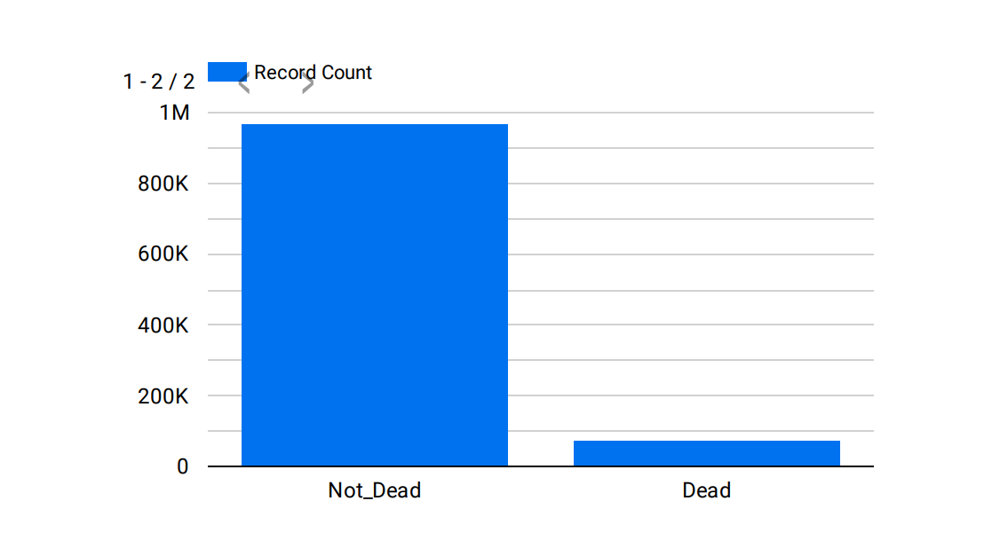
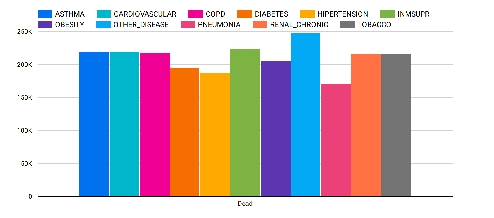
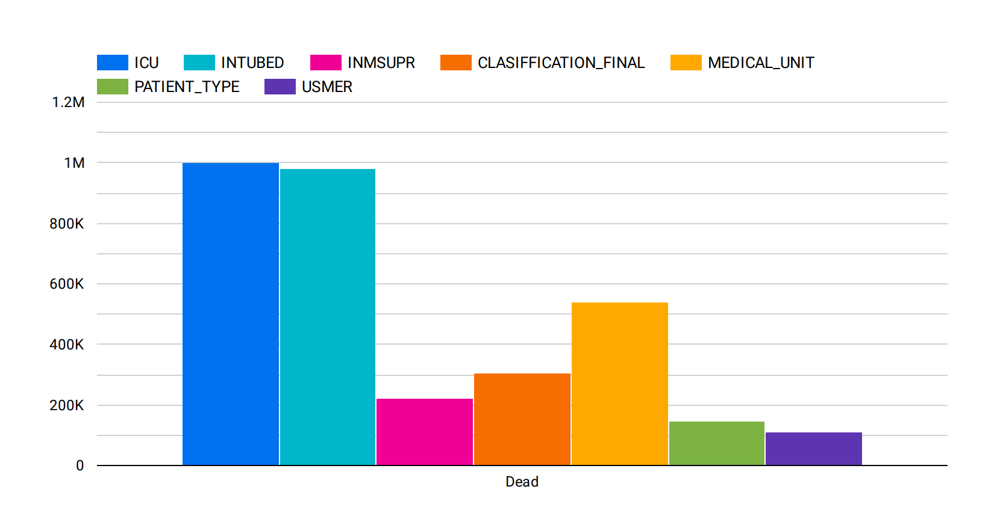
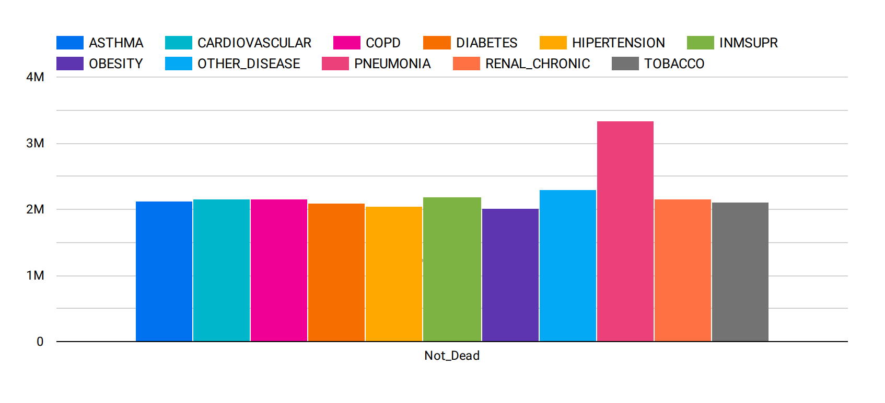

Covid analytics and self service
Welcome to the covid portal that gives insights related to covid for Mexico and provide self-service
Covid deaths in 2020
76625

- The above chart shows the count of dead and survived

- The chart above shows the types of disease that the patients had before their death.
- We can see that all the diseases accounting to death had almost similar probability

- The above chart shows the type of medical help that patients received before they died

- The above chart shows the type of disease that the survived patients had
- We can see that recovery rate of those who has Pneumonia was better than other disease

- The above chart shows the patient type (1 : returned home and 2: hospitalized)
- We can see that patients with critical condition were mostly hospitalized
- Note: there can be several discrepencies in the data that were not addressed as this analysis was partial.